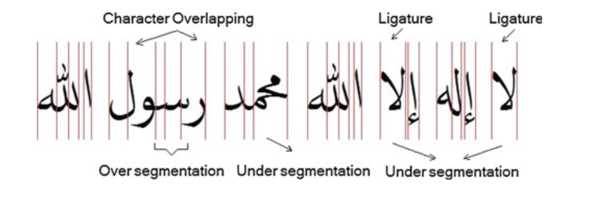
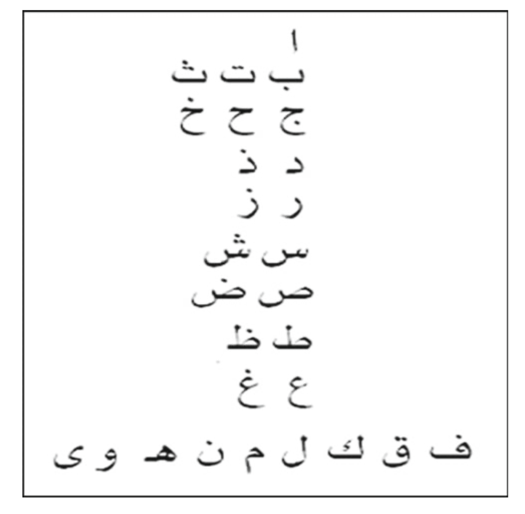
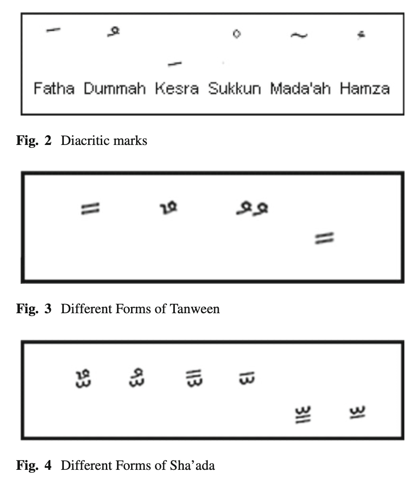
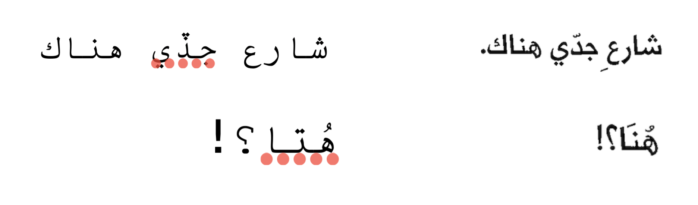
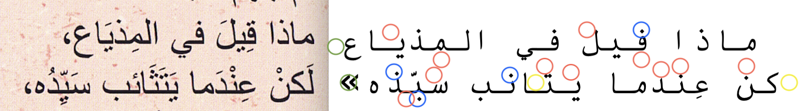
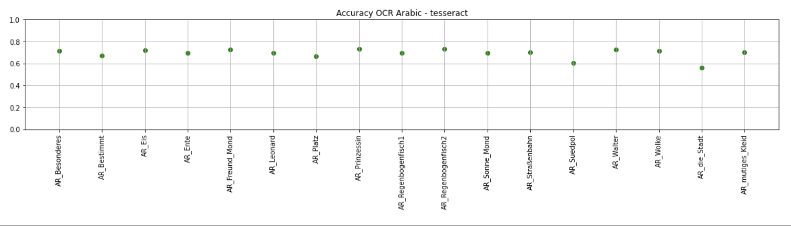
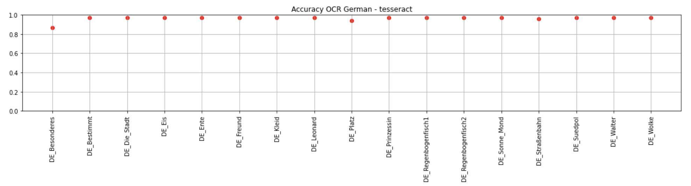
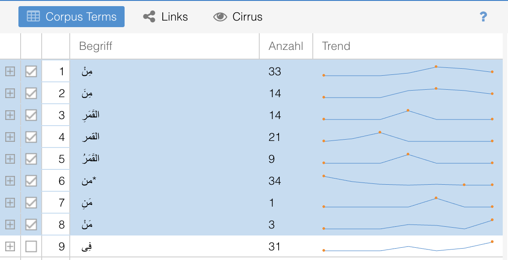
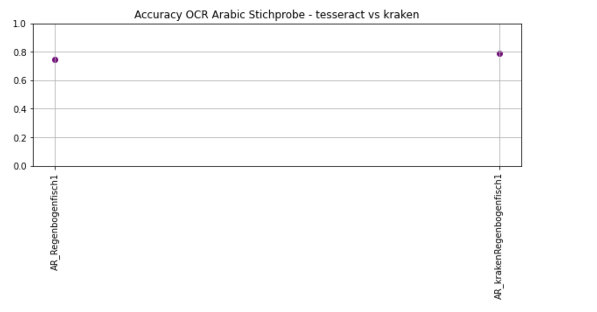

1. Vorbereitung
1.1. Datengrundlage
Bei der Erstellung eines Literaturkorpus ist zu beachten, dass die Werke ein festgelegtes literarisches Feld repräsentieren. Die für die Arbeit verwendeten Werke gruppieren sich hinsichtlich:
| Zielgruppe: | 4-8 Jahre |
| Genre: | Kinderliteratur |
| Sprachen: | Bilingual Arabisch - Deutsch |
| Buchgestaltung: | Illustriert, Layout flexibel |
| Wordcount: | pro Sprache, pro Titel < 3000 W. |
Anmerkung: Das erstellte Korpus erhebt keinen Anspruch auf Repräsentativität.
Schwachstellen: Das Korpus muss bezüglich seiner Repräsentativität kritisch betrachtet werden. Folgende Punkte sind zu beachten:
| Umfang: | für verlässliche Aussagen über die zu repräsentierende Gruppe wird mehr Material benötigt. |
| Nachhaltigkeit: | Erstellte Korpora sollten auch für zukünftige Forschungsfragen genutzt werden können. Das hier erstellte Korpus kann aber aufgrund von Urheberrechten nicht öffentlich zugänglich gemacht werden. |
| Repräsentanz: | Da die Gesamtheit der zu repräsentierenden Werke nicht erfasst wurde, kann sie nicht wie von Herrmann und Lauer [7] gefordert, durch das vorliegende Korpus abgebildert werden. Es gibt keine ausreichende Dokumentation der existierenden Werke, die auf die Kriterien zutreffen. |
Kriterien zur Erstellung und Bewertung eines literaturwissenschaftlichen Korpus sind bei Herrmann und Lauer [7] sowie bei Biemann [2] zu finden.
1.2. Digitalisierung der Daten
Für die Einheitlichkeit der Daten werden Parameter festgelegt, die auf alle Scans angewendet werden sollen. Die Erfassung der Scans erfolgte unter den Einstellungen:
- Format: .tif
- Auflösung: 300 dpi
- Farbeinstellung s/w
- Nur Seiten, die Text enthalten, werden gescannt.
1.3. Optical Character Recognition
Optical Character Recognition (OCR) ist Teil der Document Image Analysis (DIA), die sich mit automatisierter Textverarbeitung auf gescannten Bilddokumenten beschäftigt[8]. Hier wird bei der Digitalisierung von Dokumenten Text aus Bild- und Videomaterial entnommen und maschinenlesbar sowie -editierbar gemacht. Dieser Schritt stellt die Grundlage für die anschließenden computerbasierten Untersuchungen der Texte.
Anforderungen an die OCR-Engine
Bei der Wahl der Engine für die Extraktion des arabischen und deutschen Textes, sind für die
Fragestellung der Arbeit folgende Kriterien zu beachten:
| Lesrichtung: | Die Engine muss sowohl auf Right-to-Left-languages (RTL, Arabisch) als auch auch Left-to-right-languages (LTR, Deutsch) ausgelegt sein. |
| Illustrationen: | Die Engine muss Text von Illustrationen abgrenzen können. |
| Layout: | Die Textparagraphen müssen auf den Seiten mit flexiblem Layout gefunden werden. |
| Multilingualität: | Um die Textdaten in einem Durchlauf zu erfassen, ist die Fähigkeit zur multilingualen Texterkennung von Vorteil. |
2. OCR tesseract
Für diese Arbeit wird die multilinguale OCR-Engine Tesseract verwendet. Tesseract zeichnet sich durch seine Schnelligkeit und Benutzerfreundlichkeit aus. Eine umfangreiche Dokumentation über die Benutzung von tesseract ist hier zu finden.
2.1. OCR-Workflow
Für den OCR-Workflow sind mehrere Schritte notwendig[4]:
| Imageerstellung: | Scans mit den oben festgelegten Parametern erstellen |
| Preprocessig: | Bereinigt die Bilddatei: Entfernung von Rahmen, Kontrasteinstellungen, Rotation, Denoising, Binarisierung der Farbwerte |
| Segmentation: | Erkennung und Eingrenzung von Textfeldern, Textzeilen (lines), Worten (words), Zeichen (character) |
| Recognition: | segmentiertes Material wird mit Zeicheninventar der übergebenen Sprache abgeglichen. |
| Text: | erkannter Text wird in .txt Datei gespeichert |
2.2. Einstellungen
Wie bei der Erstellung der Scans sollte auch bei der Erstellung der Textdaten auf eine einheitliche Einstellung geachtet werden, wenn die Qualität der Daten im Anschluss bewertet werden soll. Die hier gewählten Einstellungen sind:
| Page-segmentation-mode: | psm-3 (Default) |
| Sprachparameter: | Arabisch: -l script/Arabic Deutsch: -l deu+script/Arabic |
| Dateibenennung: | Ausgangstexte: Sprache_Titel.txt Übersetzungen: T_ÜS_Titel_Sprache.txt |
Anmerkungen:ÜS steht für das Namenskürzel der übersetzenden Person.
Die besten Ergebnisse für Arabischen Text gewährt die monolinguale Einstellung -l script/Arabic und anschließendes Filtern der lateinischen
Schriftelemente.
Bei der monolingualen Sprachangabe -l deu hingegen, werden arabische Zeichen in
lateinische
Buchstaben oder
Sonderzeichen umgewandelt, was ein schwer filterbares Textdokument mit hoher Fehlerquote
hervorbringt. Die Angabe beider Sprachparametern für die Datei mit bilingualem Inhalt führt
dazu,
dass zum einen der deutschsprachige Anteil mit hoher Accuracy erkannt wird und zum anderen
und der arabischsprachige Anteil leichter herauszufiltern ist, da die arabischen
Schriftzeichen
durch einen regulären Ausdruck (Regex) extrahiert und gelöscht werden können.
Für das arabische
Schriftmaterial bietet der Parameter Script/Arabic außerdem deutlich bessere
Ergebnisse als der
Language Parameter ara. Zu beachten ist aber, dass sich der
Script/Arabic Parameter
sich auf das Spracherkennungsmodell bezüglich des Schrifttyps bezieht und deshalb alle
Sprachen umfasst, die sich der arabischen Schrift
bedienen. Unter anderem bedient sich auch die persische Schrift diesem Schriftsystem,
wobei hier vier zusätzliche Buchstaben benutzt werden. Diese Zeichen werden stellenweise in
dem hier extrahierten Textdaten fälschlicherweise erkannt.
Während links ein der arabische Buchstabe Kāf mit einer fatha Vokalisierung (Strich über dem Buchstaben) zu sehen ist, ist rechts der persische Buchstabe Gāf als Output erschienen, der den Strich oberhalb als festen Bestandteil enthält.
2.3. Script Detection
Script und Script confidence
Tesseract bietet mehrere Page-segmentation-modes (psm) an, mit denen die .tif-Datei
auf
Textmaterial hin durchsucht wird. Bei der Übergabe des Befehls psm-0 wird Orientation
and
script detection (OSD) durchgeführt. Dieser Schritt dient der
Vorbereitung für die Umwandlung von Bild zu Text.
Die Benennung des Schriftsystems grenzt die
Sprachauswahl ein und der rotation-value gibt eine Einschätzung über die Ausrichtung des
Textes. Für die Bestimmung des Schriftsystems werden auf der Grundlage von Trainingsdaten
Muster wie Substrings oder Buchstaben erkannt, die Aufschluss über die Zugehörigkeit zu
einem Schriftsystem geben sollen. Dabei kommt der static shape classifier von tesseract zum
Einsatz,
der bereinigte Buchstaben oder Buchstabenfolgen (blobs) durch Rahmen (bounding boxes)
begrenzt. Diese Inhalte werden mit dem vorhandenen Bildmaterial abgeglichen und
klassifiziert[9].
Um nicht jedes mögliche Vorkommen einer Form trainieren zu müssen,
wird in einem generativen Ansatz versucht, die repräsentativsten Abbildungen für ein
Schriftsystem zu finden. Hierfür werden Zeichen (shape primitives) gesucht, die möglichst in
jedem
Textkörper dieses Schriftsystems vorkommen. Diese Zeichen können einzelne Buchstaben oder
Buchstabenverbindungen sein,
welche als fragments bezeichnet werden. Die am häufigsten vorkommenden fragments sind für
die Script Detection
ausschlaggebend[9]. Die Ausgabe des
vermuteten Scripttyps erfolgt gemeinsam
mit einem kumulativen confidence-Wert. Für kurze Texte ist dieser Wert aufgrund seiner Zusammensetzung
meist sehr niedrig.
Multilingualität bei der Script Detection
Obwohl tesseract auf Multilingualität ausgelegt ist, werden unter der Einstellung psm-0 bei
keinem
der hier vorliegenden bilingualen Seiten zwei Sprachen erkannt. Auf dem Großteil der Seiten
mit
bilingualem arabisch-deutschem Text wird OSD Script: Latin mit geringem confidence Wert
erkannt. Auf Seiten, wo sich nur arabischer Text befindet, wird OSD Script: Arabic
ausgegeben.
2.4. Binarisierung
Die während des Preprocessings vorgenommene Binarisierung für den Text auf Illustrierten Seiten hat zur folge, dass bei Überschneidungen Textmaterial nicht erkannt wird. Bei folgendem Ausschnitt wurde der Text, der über der dunkel gefärbten Illustration liegt, nicht erkannt:
3. OCR Arabisch:
3.1. Fehlerquellen
Auf den ersten Blick wird ersichtlich, dass die generierten Textdaten in arabischer Sprache eine deutlich höhere Fehlerquote aufweisen als die deutschen Textdaten. Eine ausführliche Auseinandersetzung mit character segmentation für arabische Schriften ist bei Qaroush et al. [10] und Alginahi [1] zu finden. Hier wurden unter anderem folgende Besonderheiten der Schrift hervorgehoben, die den OCR Vorgang erschweren und zu Ergebnissen mit hoher Fehlerquote führen:
| Kursivität: | 22 der 28 Buchstaben werden mit dem darauffolgenden Buchstaben verbunden. Zusätzlich ändern die Buchstaben je nach Stellung im Wort ihre Form. Daher kann ein Buchstabe bis zu drei verschiedene Formen annehmen. Es besteht auch die Gefahr, dass ein Verbindungsstrich zwischen zwei Buchstaben als eigener character erkannt wird. Dies wird over segmentation genannt. |
| Ligaturen: |
Je nach font verfügt die arabische Schrift über ein höheres oder niedrigeres Maß an Ligaturen. Das heißt, dass Buchstaben in solchem Maße ineinander übergehen, dass sie horizontal nicht zu trennen sind und gemeinsam eine neue Form ergeben. Diese Form muss für character segmentation von der Engine gelernt werden, da sonst under segmentation vorliegt. Auch das Wort "und" wird oft an das darauffolgende Wort angehängt, weshalb es bei der Anwendung von white spaces als Segmentierungsgrenze zu Ungenauigkeiten kommt.  |
| Formen: | einige Buchstaben basieren auf derselben Form und werden
durch diakritische Zeichen (Punkte über oder unter den
Buchstaben) differenziert. (Siehe Figur in [1]). Liegen diese diakritischen Zeichen außerhalb des von der Engine gesetzten Rahmen, werden die Buchstaben nicht erkannt.  |
| Diacritics: |
Neben den Punkten, die die Buchstaben voneinander abgrenzen, gibt es Zeichen für die Vokalisierung. Diese Zeichen können beim OCR Vorgang mit Punkten verwechselt werden, was zur Folge hat, dass ein anderer Buchstabe erkannt wird. (Auf den Figuren 2-4 ist ein Überblick über die zusätzlichen Zeichen zu sehen.)  |
3.2. Beispiele
Rechts: Original, links: Output tesseract.
Hier ist an zwei Beispielen zu sehen, wie diakritische Zeichen verwechselt werden. Die entstandenen fehlerhaften Worte, wurden mit roten Punkten von der Rechtschreibprüfung markiert. In beiden Fällen ist der mittlere der drei Buchstaben falsch erkannt worden. Im ersten Beispiel wird ein im Arabischen nicht existierender Buchstabe abgebildet während im zweiten Beispiel eine Umwandlung von [na] zu [t] erfolgt.

links: Original, rechts: Output tesseract.
Die Fehler wurden hier durch Farbmarkierungen kategorisiert.
blau:fehlerhafte Wiedergabe der Punkte -> im Output sind jeweils andere Buchstaben zu sehen.
rot: fehlende Vokalzeichen
grün: Satzzeichen werden nicht oder fehlerhaft erkannt.
gelb: fehlende Buchstaben.
4. Accuracy
Mithilfe dieses in Python programmierten Skripts(Script for comparing different OCR workflows) wurden Genauigkeitswerte für die Deutschen und Arabischen Ergebnisse des OCR-Durchgangs ermittelt.
4.1. Accuracy AR
4.2. Accuracy DE
5. Postprocessing
Das Postprocessing der Reintextdateien wurde manuell durchgeführt, in dem der Text mit dem Ausgangsmaterial verglichen und angepasst wurde. Dieser Schritt erfolgte manuell, weil die diakritischen Zeichen mit den Zeichen auf den TIFF-Dateien übereinstimmen sollten. Die Vokalisierung durch diakritische Zeichen ist in der hier verwendeten Datengrundlage nicht konsequent sondern partiell und nach eigenem Ermessen der Verfassenden gegeben. Die Arbeit mit einem Dictionary für das Postprocessing würde entweder alle Vokalzeichen entfernen oder eine einheitliche Vokalisierung durchführen, was dem vorliegenden Material nicht entspricht.
6. Quantitative Korpusanalyse
Bei der Quantitativen Analyse von Literaturkorpora kann Aufschluss über den Inhalt gegeben werden. Die Grafik zeigt einen Ausschnitt aus Voyant tools, eine browserbasierte Open-source Anwendung für Korpusexploration. Voyant-tool funktioniert diacritic sensitive. Das heißt, Worte werden für distinktiv gehalten, wenn sie in Groß- und Kleinbuchstaben oder Vokalisierung voneinander abweichen. Die Vokalzeichen für die grammatischen Endungen im Arabischen machen aus einem Wort mehrere Worte, was für die Erfassung von Worthäufigkeiten eine Verfälschung der Ergebnisse mit sich zieht.

Platz 2: مِنَ mina (deutsch: von), a-Auslaut am Wortende.
Platz 3: القَمَرِ alqamari deutsch: der Mond mit Genitiv-Auslaut i.
Platz 4: القمر alqamar deutsch: der Mond ohne Vokalisierung.
Platz 5: القَمَرُ alqamaru deutsch: der Mond mit Nominativ-Auslaut u.
Platz 6: من min oder man, deutsch von oder wer
Platz 7: مَنِ mani deutsch: wer, i-Auslaut am Wortende.
Platz 8: مَنْ man deutsch: wer, kein Vokal am Wortende.
Unvokalisiert kann das auf den Plätzen 1,2 und 6-8 vorkommende Wort kontextabhängig sowohl „wer“ als auch „von“ bedeuten. Oder, da es mit * versehen ist, kann es auch als Endung eines anderen Wortes vorkommen. An diesen Beispielen wird deutlich, dass die Daten ohne Kontext mit Vorsicht betrachtet werden müssen.
7. Stilometrische Untersuchungen nach Übersetzungssignalen
Stilometrische Analysen beziehen sich auf den Stil einer schreibenden Person. Die
wahrscheinliche Ermittlung von Urhebenden eines Textes mithilfe quantitativer linguistischer
Methoden wird Stilometrie genannt [5].
Für die Ermittlung des individuellen Schreibstils einer Person werden häufig die meist verwendeten
Wörter (Most frequent words MFW) ermittelt. Durch den Einsatz von Distanzmaßen, wird die wahrscheinliche Autorschaft ermittelt.
Als Vergleichsbasis für die übersetzten Texte wurden alle Originaltexte von Chat-Gpt 3.5 maschinell übersetzt. Diese Dateien sind an dem Affix T GPT zu erkennen.
7.1. Tool: stylo
Mit dem in R programmierten Tool stylo können stilometrische Untersuchungen durchgeführt werden, wobei ein einfach zugängliches Graphical User-Interface für eine hohe Nutzerfreundlichkeit sorgt.
7.2. Deutsch
Festzustellen ist, dass die deutschen Originalwerke zusammen gruppiert werden, obwohl sie von anderen Autoren verfasst wurden. Das heißt, dass es tendenziell eine Unterscheidung zwischen dem Stil in aus dem Arabischen übersetzten und ursprünglich im Deutschen verfassten Werken gibt.
Die Übersetzungen von Chat-GPT 3.5 und den menschlichen Übersetzenden finden sich paarweise für die selben Werke zusammen. Das war aufgrund des übereinstimmenden Ausgangstextes zu erwarten.
7.3. Arabisch
Überraschenderweise gruppieren sich hier die übersetzten Werke mit dem selben Ausgangstext von menschlichen Übersetzenden und ChatGPT nicht zusammen.
Die Werke gruppieren sich hier nach Übersetzenden, wobei die von Chat GPT 3.5 übersetzten Werke ebenfalls zusammen gruppiert werden. Der Übersetzer ACH und ABU wird zusammen gruppiert. Ähnliches ist bei HAS zu beobachten, wobei dieser den Übersetzungen von Chat-GPT 3.5 nahe kommt.
8. Ausblick
8.1. OCR-Engine Kraken für AR
Die Open Source OCR-Engine Kraken wurde von Dr. Benjamin Kiessling entwickelt. Sie zeichnet sich dadurch aus, Schriftsysteme mit verschiedenen Anordnungen wie Right-to-left script oder Top-to-bottom script zu unterstützen.Außerdem lässt sich der Output mit einer geringen Menge an Daten durch effektives Training verbessern.
Für Arabic script wurde mit 800-1000 Zeilen Trainingsdaten Genauigkeitswerte von >97,5% erreicht[8].
Die Plattform eScriptorium bietet ein Nutzerfreundliches GUI für OCR mit kraken.

Anmerkung: Bei Fragen zur Nutzung wird eine Sprechstunde des Kompetenzzentrums OCR der UB Mannheim angeboten.
8.2. Stilometrische Untersuchungen für bilinguale Korpora mit POS-tags
Für die Arbeit mit bilingualen Literaturkorpora kann Cinkovás und Rybickis Ansatz der Einbindung von
POS-tags hilfreich sein [3]. In dem crosslinguistischen Ansatz wird der Inhalt der Texte durch
Part-of-Speech-Tags (PoS-tagging) ersetzt, die die grammatische Kategorie der Wörter
wieder gibt. Dadurch wird eine sprachunabhängige stilometrische Analyse ermöglicht.
Zu beachten ist bei dieser Vorgehensweise für arabische Texte, dass PoS-tagging aufgrund der
der Morphologie der Sprache eine Herausforderung dar. Arabisch ist eine stark flektierende Sprache. Ein Wort kann mehrere grammatische Informationen beinhalten, die nicht eindeutig abgegrenzt werden können.